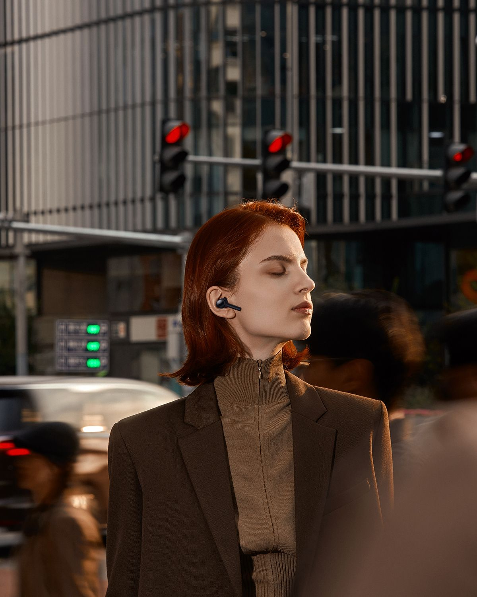

“Noisecore is my greatest creation.”
I'm Sung Jin Woo, founder of Noisecore. My journey began from trying to teach people music, and trying to solve the challenge in music hearing and innovation. After a rough journey with many struggles, Noisecore was born.

Noisecore is committed to redefining how people experience and connect with sound. We believe music is not just heard — it's felt. Our mission is to empower creators and listeners with tools, technology, and freedom to explore sound in its purest form.
We value authenticity, elegance, creativity, and bold experimentation. Everything we build stems from our passion for helping others hear the world differently.
Be a part of the Noiscore's history. Join, connect, and amplify your world with Noisecore.
Become a Member